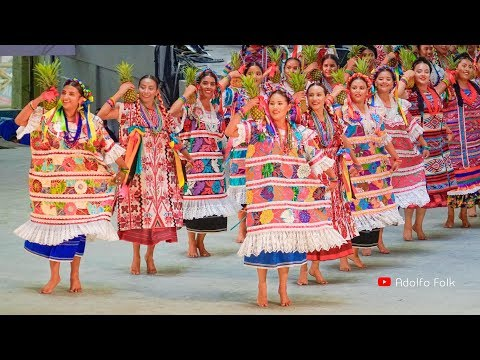
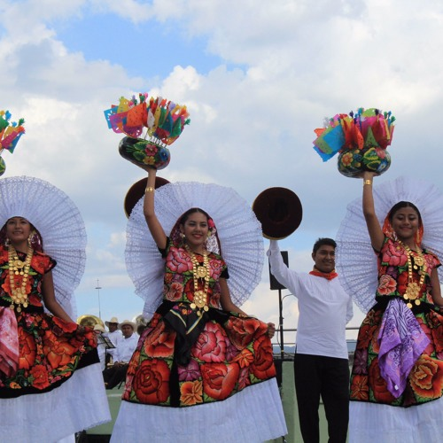
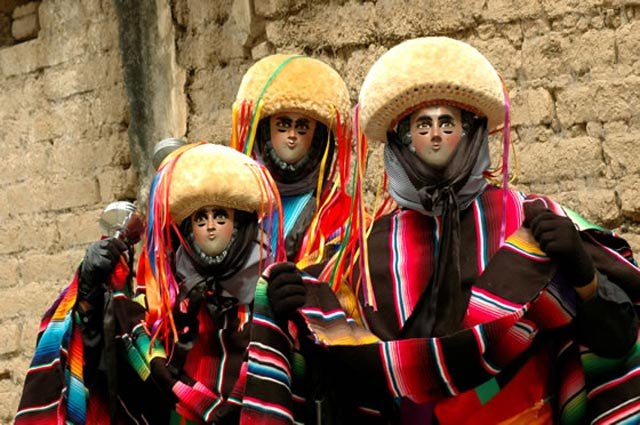
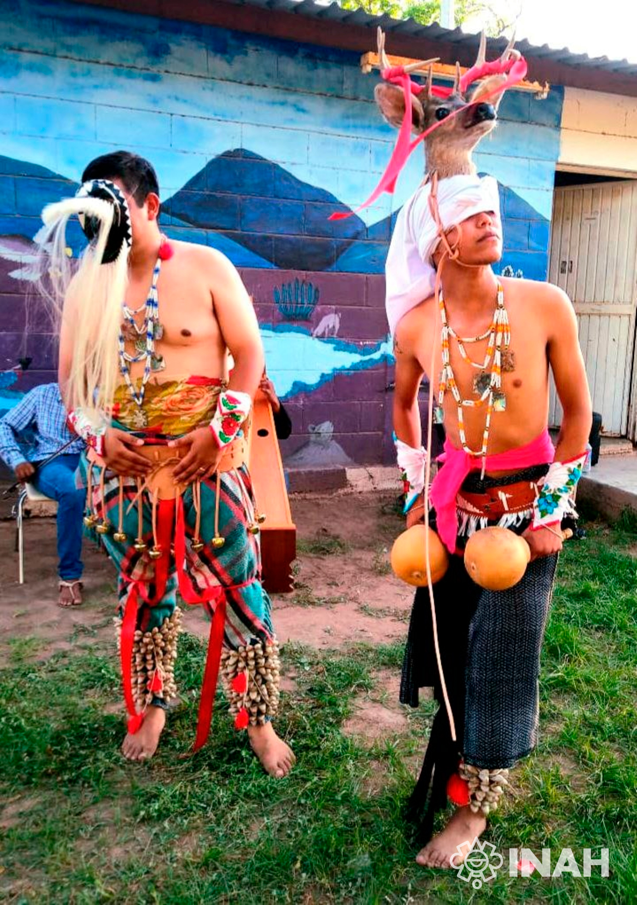
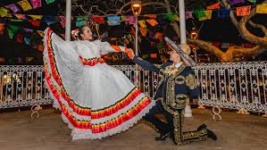
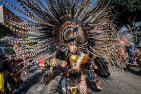
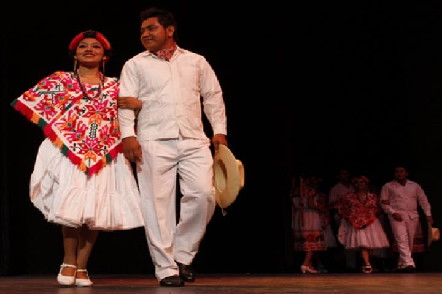

Tipos de danza
Imagen
Flor de Piña
Danza de la Pluma

Tipos de danza |
Imagen |
Flor de Piña |
 |
Danza de la Pluma |
|
Zandunga |
 |
De los parachicos |
 |
Danza del Venado |
 |
Jarabe Tapatío |
 |
Danza de los Concheros |
 |
Huapango |
 |